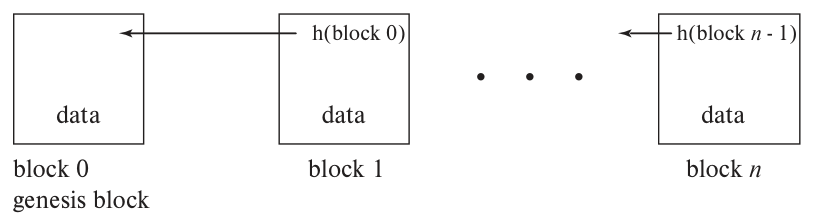

第 26 章 区块链数据库
译注：本章保留原书写作时的技术背景，多处明确以 2018 年末为时间参照。以太坊迁移计划、性能数字、工具与合约行为均按原书语境阅读。
从最基本的层面看，区块链提供了另一种数据库存储格式，其事务处理方式支持高度去中心化。
区块链的一项主要用途是创建数字账本。在金融领域，账本用于记录账户交易。例如，每次存款或取款，银行都会向账本增加一条记录。客户将账本交由银行维护，也就默认信任银行：银行不会擅自添加未经授权的取款，也不会删除已经发生的存款。
基于区块链的分布式账本由多个参与方共同维护。每笔交易都带有数字签名，用来证明真实性；记录一旦加入，任何一方都无法在不被其他参与方发现的情况下，将其删除或修改。
区块链是比特币和其他加密货币的重要基础。许多底层技术早在 20 世纪八九十年代便已出现，直到 2010 年代，比特币等加密货币经历繁荣与随后的下跌，区块链才广为人知。
区块链的用途还包括为商业应用提供安全的数据存储和处理基础，使各方无须完全信任某一个参与者。例如，一家大型制造企业及其供应商，需要持续记录产品和零部件的位置。即使平时都可信，某一方在特定情形下也可能有强烈动机篡改记录，区块链可以防范这种欺诈。产权文件也是潜在应用：伪造房契可能让人出售并不属于自己的房产，真实业主也可能把同一房产重复出售。区块链有助于验证数字产权文件的真实性，并让已出售房产的业主再次出售时被发现。
区块链的数据结构还能支持公众查阅这些产权记录，同时防止记录受到篡改。本章后面将介绍其他应用。
本章从数据库角度讨论区块链：它与前面介绍的传统数据库有哪些差异，这些特征如何实现，以及哪些算法和实现比比特币式方案更适合企业环境。我们关注数据管理，不讨论加密货币的金融影响，也不介绍如何通过钱包或交易所管理个人持有的货币。
26.1 概述
深入讨论之前，先概述推动区块链发展的加密货币。区块链的用途远不止加密货币。
传统货币也称法定货币（fiat currency），通常由一国中央银行发行，并由政府提供信用担保。纸币本身只是一张纸，其价值来自发行政府的承诺，以及使用者对政府的信任。如今，财富虽然仍以货币计价，大部分却并不以纸币形式存在，而只是银行或其他金融机构账本中的记录。使用者必须信任维护账本的机构。
加密货币（cryptocurrency）完全在网络上创建，记录方式无须任何一个组织或国家得到所有人的完全信任；名称源于其对密码技术的依赖。数字信息容易复制，因此必须防止同一笔钱被双重支付（double spending）。为此，加密货币用账本记录交易，并将账本保存在安全的分布式基础设施中，无须信任单一参与方。去中心化和无须信任单一主体（trustlessness）是其基本理念。加密货币还通常希望像现金一样提供交易匿名性，保护用户隐私，这与信用卡、借记卡交易不同。不过，链上数据公开，数据分析仍可能削弱匿名性。
比特币是第一个成功的加密货币，起点是中本聪（Satoshi Nakamoto）于 2008 年发表的论文1，以及 2009 年随后发布的开源代码。
这篇论文解决了多项问题，使此前被认为难以实现的加密货币成为现实。
不少底层概念和算法已经发展数十年。中本聪将新设计与已有研究结合，构建了完整系统，比特币的成功证明了这一贡献的价值。不过，匿名、无须信任单一主体、完全分布式的货币这一目标，也使一些技术选择不太适合数据库环境。本章“延伸阅读”列出了相关思想的发展文献。
区块链可以看作由数据块组成的链表，也可以理解为数据更新日志。它能够以分布式方式管理，并具有较强的抗篡改性：单个参与者无法轻易修改或操纵已有记录，通常只能向链上追加经过数字签名的记录。
企业需要分散控制、减少对单一主体的信任，但完全匿名与会计原则和监管要求可能冲突，由此形成两种主要场景。比特币采用公有区块链（public blockchain），任何站点都可以加入并参与维护。多数企业采用更受约束的许可区块链（permissioned blockchain），参与资格由企业、企业联盟或政府机构等授权方授予，并不向所有人开放。
比特币让公有区块链变得可行，但运行需要大量 CPU 算力和电力，事务处理延迟也较高。放宽它对匿名性和无须信任单一主体的严格要求，就有可能降低这些开销，设计更符合企业数据管理需要的区块链。
下面先从比特币的经典链式结构出发，介绍区块链的主要性质。许多性质依赖单向密码散列函数。它与第 24 章用于数据库索引的散列函数不同，需要满足特定数学性质，例如：已知数据 x，计算 h(x) 应当容易；只给定 h(x)，反推出 x 则应在计算上不可行。
区块链分布在多个系统上时，参与者必须就链中已有内容及下一步新增内容达成一致。如果参与者彼此信任，只可能发生故障，23.8 节的共识技术就能让它们对日志内容达成一致，区块链也具有日志的作用。但在各方互不信任、又没有集中控制的环境中，基本共识算法无法直接适用。
例如，攻击者可以建立大量系统，分别作为节点加入区块链，从而控制多数参与节点。任何依赖多数表决的决定都可能被它操纵，链的抗篡改性也就遭到破坏。
我们先介绍比特币耗能较高的方法，再讨论其他加密货币采用的更高效方案，最后介绍拜占庭共识。这类算法能够容忍一定比例的节点撒谎或主动破坏共识，适用于参与资格受控的企业许可链。拜占庭共识问题及其解法已有多年历史，区块链数据库的特殊要求又推动了新方法的发展。进一步资料见本章“延伸阅读”。
区块链数据库可以保存企业的多种数据，超出货币收支交易的范围。传统链式组织不便于高效查询；与传统数据库配合，或直接构建在数据库之上，可以改善查询处理。我们还会讨论如何提高更新事务的速度，包括改进链内部处理，以及先在“链下”执行部分操作，之后再成批记入链中。
介绍完算法后，26.8 节将讨论区块链数据库的一些应用前景。
26.2 区块链的性质
区块链是一串数据块构成的链表，其指针同时保存前一个较旧块的标识和散列值，结构如图 26.1。最初的块由区块链创建者设置，称为创世块（genesis block），图中编号为 0。此后每增加一个块，都包含“前块指针、前块散列值”这一对信息。修改某个块后，只要重新计算它的散列值，再与下一个较新块中保存的值比较，就能发现差异。攻击者也可以修改后一块中的散列值，但接着还必须修改再后一块，如此一直延续。

图 26.1 区块链数据结构。 block 0 为创世块；各块保存数据 data，并保存前一个块的散列值，例如 h(block 0)、h(block n − 1)。
这种由散列值校验的指针使篡改更加困难。要使篡改在实际中不可行，还必须容易发现篡改，并能判定正确版本：散列函数需要满足后面讨论的数学性质；整条链也需要复制到许多独立节点上，防止单个节点或少数节点控制记录。由于存在多份副本，还要用分布式共识算法，使参与者认同当前链的正确状态。即使部分节点试图篡改，只要足够多的节点诚实，基于多数的决策就能保护完整性。
这一思路要求控制参与节点集合，使攻击者难以占据多数。但这样的控制与比特币等公有链追求的去中心化目标冲突。公有链的节点数不断变化，任何计算机都可以下载开源软件和链数据，并尝试添加区块。攻击者便可能建立大量廉价节点，压倒基于节点数量的多数表决，这称为 Sybil 攻击（女巫攻击）。
不同区块链采用不同共识方式，在吞吐量、延迟与抵抗恶意行为的能力之间取舍，其中包括抵御女巫攻击。第 23 章讨论分布式共识时，假定整个系统由一个组织控制，节点或网络只会停止工作，参与者不会主动作恶。
区块链通常由多个独立组织共享。比特币这样的极端情形允许任何人建立节点，其中可能包含恶意参与者。
系统需要处理的故障便包括仍在运行却主动作恶的节点。企业许可链虽然能控制谁可以加入，仍无法直接保证每个参与者都诚实。
完整参与区块链的节点需要加入共识过程，并维护自己的完整链副本，称为全节点（full node）。另一些低成本节点只向链提交更新，没有足够存储或计算能力参加共识，称为轻节点（light node）。
26.4 节将详细讨论共识算法。大致可分为以下几类。
- 工作量证明（proof of work）：使攻击者控制网络多数算力的代价很高，从而抵御女巫攻击。节点约定，由第一个解出特定困难数学问题的节点添加新区块，这称为挖矿（mining）。只要攻击者不控制整个网络一半以上的算力，算法便能抵御恶意行为。为维持这一门槛，问题被有意设置得很难，需要大量计算，代价是完成这些除此之外无用的计算所需的硬件与电力。详见 26.4.1 节。
- 权益证明（proof of stake）：依据节点持有或锁定的链上货币数量，决定由谁添加下一块，提供另一种抵御女巫攻击的方法。详见 26.4.2 节。
- 拜占庭共识（Byzantine consensus）：本身不能解决女巫攻击，但适用于加入资格可控的非公有链。它允许少数节点作恶，假定绝大多数诚实，通过消息交换达成一致，并容忍恶意节点干扰共识或诱导错误决定。与 23.8 节的基本算法相比，它需要交换更多消息，但能在一定数量恶意节点存在时保持正确，因而值得付出这项代价。详见 26.4.3 节。
- 其他方法：还有一些使用较少的机制，其中部分是上述方法的变体，例如活动证明、销毁证明、容量证明和经过时间证明。
这些方法的详细资料见本章“延伸阅读”。
除了修改旧块，还可以把新区块接到某个并非最新的块后面，形成分叉（fork）。分叉可能出于恶意，也有两种非恶意来源。
- 同时出块。 两个节点几乎同时在最新块后添加新区块，彼此尚未来得及获知对方结果，便形成两条分支。协议要求节点继续在最长链的末尾添加区块，使意外分支在概率上通常较短。较短分支上的块被称为孤块（orphaned block），其中尚未出现在主链的内容，之后会重新加入主链。
- 协议变更。 多数用户同意通过分叉修改协议或数据结构。这种情况较少发生，在主要区块链上曾引发较大争议。软分叉（soft fork）保持旧软件能够将新软件生成的区块视为有效，允许逐步升级。硬分叉（hard fork）则会让旧软件把新版本生成的区块判为无效；若旧软件继续运行，就可能形成内容不同的另一条链。
由于新区块可能最终成为孤块，通常需要等待若干后续区块加入，才可较有把握地认为它会保留下来。
说明 26.1 给出了一些著名分叉。至于块内保存什么，则取决于应用。在加密货币中，最常见的是货币转移交易。任何节点都可能添加区块，因此需要验证交易确由用户授权。数字签名（digital signature）允许用户为交易签名，其他节点则可验证，从而防止伪造交易，也让参与者事后无法否认自己的行为。后一性质称为不可抵赖性（irrefutability）。
交易广播给所有参与节点。节点添加新区块时，将自己已收到、但尚未加入链的交易放入块中。
许可链的管理员可能知道交易提交者的真实身份；比特币等公有链中的用户 ID 则没有直接关联某个现实主体。
匿名性是比特币的重要特点，但如果某个 ID 与链下活动联系起来，身份便可能暴露。例如，与已知身份的用户发生交易，或者通过数据挖掘，将某个 ID 的链上活动与个人现实活动关联，都可能使用户被去匿名化。
说明 26.1 区块链分叉的例子
主要区块链发生过多次著名分叉，以下列举其中几例。
- 硬分叉：Bitcoin / Bitcoin Cash。 比特币社区普遍承认内置区块大小上限带来问题，但解决方案存在争议。2017 年 8 月的硬分叉创建了区块上限更大的 Bitcoin Cash。分叉时持有比特币的用户获得等量 Bitcoin Cash，之后可以分别使用两种货币。
- 软分叉：Bitcoin SegWit。 SegWit 即隔离见证（segregated witness），将部分称为见证数据的交易签名数据移出原有区块结构，使既定大小限制内能容纳更多交易。这些被移出的数据仅用于交易验证。2017 年 8 月通过软分叉引入后，旧区块仍被视为有效，未升级节点也能维持较高兼容性。
- 硬分叉：Ethereum / Ethereum Classic。 以太坊上的一个众筹风险投资智能合约存在设计缺陷，2016 年遭到攻击，价值数千万美元的以太币被盗。一场有争议的硬分叉退回了被盗资金；坚持不可变性的反对者保留原链，形成 Ethereum Classic。
区块链还可以保存可执行代码，称为智能合约（smart contract）。它能够实现复杂事务，在未来满足条件时执行操作，或表达多方之间的复杂协议。各链使用的合约语言及其表达能力不同：许多语言是图灵完备的，比特币等系统则使用能力受限的语言。26.6 节将介绍合约代码何时执行、怎样执行。
可以将区块链的性质概括如下2。
- 去中心化：公有链由多数共识控制，没有中央管理机构；许可链的集中控制通常限于准入授权和身份管理，其他操作分散执行。
- 抗篡改性：未能控制网络中足够大的多数时，修改已有区块内容在计算上不可行。
- 不可抵赖性：用户的链上行为带有密码签名，任何人都可以验证，证明相应交易得到该用户授权。
- 匿名性：用户 ID 不直接关联个人身份信息，但仍可能通过间接分析识别身份；许可链的匿名性可能有限，也可能完全不提供。
26.3 用密码散列函数实现区块链性质
本节讨论密码散列函数怎样保证区块链的部分性质。先介绍难以求逆、难以找到碰撞的特殊散列函数，再联系 9.9 节介绍的公钥加密，说明匿名性、不可抵赖性与抗篡改性如何实现。散列函数在挖矿中的用途放到 26.4.1 节讨论。
26.3.1 密码散列函数的性质
14.5 节用散列函数访问数据。本节用途不同，因此需要它具有额外性质。
散列函数 h 从很大的取值域接收输入，输出固定长度的比特串。通常，定义域远大于值域。函数还应尽量均匀：输入随机时，各输出值等概率出现。如果在计算上难以找到两个不同的值 x、y，使 h(x) = h(y)，就称 h 具有抗碰撞性（collision resistance）。这里的“难以”是指，有充分数学依据，或者形式化证明，说明找出这样一对值没有优于随机猜测的办法。
换言之，不能利用某种有效捷径构造散列值相同的不同输入。
常用的密码散列函数 SHA-256 输出 256 位。给定 x，随机选择的 y 与 x 具有相同散列值的概率为 1/2²⁵⁶。即使用最快的计算机，单次猜测成功的概率也可以视为零3。
抗碰撞性有助于抵抗篡改。假设攻击者要修改区块 B，紧随其后的块保存了 B 的指针和散列值。若希望不改后一块，就必须让修改后的 B 保持相同散列值；抗碰撞性使这种修改不可行。于是，篡改某块便需要同时改动链上所有较新的块。
另一个要求是不可逆性（irreversibility）：仅给定 h(x)，在计算上难以求出 x。已知 x，计算 h(x) 很容易；但只有 h(x) 时，计算 h⁻¹(h(x)) 不可行。下一节说明这一思想怎样用于区块链4。
26.3.2 公钥加密、数字签名与不可抵赖性
9.9 节介绍了两类加密：共享同一秘密密钥的私钥加密，以及每个用户同时拥有公钥和私钥的公钥加密。共享密钥方案首先要解决如何安全交换秘密；公钥加密则让从未见过面的用户也能安全通信。这一点对服务全球大量用户的区块链很重要。
每个用户 Uᵢ 拥有公钥 Eᵢ 和私钥 Dᵢ。用 Eᵢ 加密的消息只能由 Dᵢ 解密；在这里介绍的对称使用模型中，用 Dᵢ 加密的消息则可用 Eᵢ 解开。如果 U₁ 要向 U₂ 安全发送 x，就用 U₂ 的公钥 E₂ 加密，只有 U₂ 持有的 D₂ 能解密。所用函数必须保证，从公开的 Eᵢ 无法有效求出其逆向密钥 Dᵢ。
这样，未曾见面的用户也能交换秘密消息。
如果 U₁ 的目标是给文档 x 签名，按这里的说明模型，可以用私钥 D₁ 对 x 作加密运算。只有 U₁ 持有私钥，其他人无法计算这一结果；任何人则可用公开的 E₁ 解开并验证，从而获得 U₁ 确实签署该文档的公开证据。
译注：原书用“私钥加密、公钥解密”直观解释签名。一般数字签名应区分签名算法和验证算法；它们不必是加密、解密的反向使用，也不一定能从签名中恢复消息。实际接口应使用专门的签名与验证操作。参见 NIST 数字签名标准。
区块链用数字签名验证交易。由于各块通过指针及前块散列值相连，用户只需签署最新块的散列值，就可以对整条链作出签名承诺。公钥加密的数学基础见本章“延伸阅读”。
26.3.3 简单的区块链交易
第 17 章把事务定义为读取和写入数据库的一系列步骤，隐含的数据模型是一份可供访问的数据值集合。最简单的区块链更接近数据库日志，记录实际发生的交易及其历史。不过，多数链上的交易要么独立，要么显式声明依赖，仍与传统日志不同。本节采用简单的比特币交易模型。
假设用户 A 要向 B 支付 10 个货币单位。在传统银行数据库中，事务读取 A 的余额，减去 10 并写回，再读取 B 的余额，加上 10 并写回。区块链采用不同的描述方式。
比特币式交易直接引用用户和既有交易。A 通过用户 ID 标识自己，再从历史中找出曾向自己付款的交易 T₁、T₂、…、Tₙ，使其合计至少为 10。新交易 T 将这些交易付给 A 的输出作为输入，输出则向 B 支付 10，并把余款作为“找零”返还 A。原来这些输入随后被视为已经花费。
每笔交易都记录钱付给谁、付了多少。A 的余额由一组尚未花费、且向 A 付款的交易输出构成。诚实的 A 不会再次使用已经花费的输出；若 T 试图第二次花费某个 T₁ 的输出，就构成双重支付。
26.4 节介绍的挖矿过程会检测双重支付及其他无效交易：节点跟踪未花费交易，并确认 T 的每个输入 Tᵢ 在执行时仍未被使用。T 执行之后，这些输入就标为已花费。
以太坊采用更强的另一种模型：为每个账户维护状态，包括当前余额。事务更新状态，并在账户间转账，详见 26.5 节。
比特币式交易 T 需要指定：
- 输入交易 T₁、T₂、…、Tₙ。
- 收款用户及各自金额；本例是给 B 支付 10，其余返还 A5。
- A 对交易的签名，证明交易确由 A 授权。
- 更复杂的交易还可以包含可执行代码，留待 26.6 节讨论。
- 要保存到链上的数据，其大小须低于该链规定的上限。
这一模型与传统数据库事务有多项区别：
- 已有数据不会被修改，交易只增加新信息，因此当前状态及其形成历史都可见。
- 交易顺序中的冲突会在新区块加入链时被检测，造成冲突的交易被判为无效，详见 26.4 节。
- 区块链虽然是分布式系统，交易却在本地创建，只有通过挖矿才能加入永久共享的链，相当于延迟提交。
- 依赖关系显式声明：交易列出自己使用哪些前序输出。按第 17 章的优先图表示，本例存在 T₁ → T、T₂ → T、…、Tₙ → T。
- 没有显式并发控制。完整历史和明确排序消除了许多并发控制需求。
由此，各交易无须争用某个数据库数据项的当前值。
比特币式模型只是区块链安排交易顺序的一种方式。26.6 节介绍智能合约时，还会看到其他方式。
链上能够保存数据，使它可以表示传统数据库中存储的各类信息，超出了抗篡改交易日志的用途。26.5.2 节将说明，这项能力与明确的链状态结合后，如何让区块链承担数据库的功能。
26.4 共识
参与节点各自保存区块链副本。每次增加新区块，所有节点最终都要就两件事达成一致：由哪个节点提出新区块，以及具体接受哪个区块。
传统分布式数据库的参与者属于同一个组织，共识过程相对简单，可以实施全局并发控制，并用两阶段提交决定事务提交或中止。比特币等公有链没有统一控制者。许可链虽由管理组织控制参与资格，其他操作仍可能追求较高程度的分散管理。
交易创建后广播到网络，节点收集一批交易，准备放入新区块。共识机制大致分为两类：
- 节点先选定一个节点，由它添加下一块。这类方案通常使用拜占庭共识，见 26.4.3 节。
- 允许多个节点在末块后各自创建新区块，暂时形成分叉；随后继续延长最长的线性子链，其他分支成为孤块，不计入最终区块链。为避免产生过多分叉，协议限制出块速度，使被遗弃分支的期望长度较短。这类方案通常采用工作量证明或权益证明，见 26.4.1、26.4.2 节。
节点在添加区块前，必须检查其中交易：
- 格式是否正确。
- 是否双重支付，即输入是否已被先前交易使用。节点需要维护全部未花费货币单位或交易的集合，逐一检查 T 的输入是否仍可用。
- 是否具有提交者的正确签名。
选定节点添加新区块后，区块传播给其他节点。各节点验证有效性，再加入自己的副本。
节点为什么愿意投入资源挖矿？挖矿为整个网络提供服务，矿工会获得该链货币作为报酬，主要来自两个渠道：
- 系统新发行的货币奖励。
- 交易提交者支付的手续费。交易额外包含一笔给矿工的输出，支付给将该交易打包入块的节点。用户愿意附加费用，是因为这会提高矿工优先收录其交易的意愿。
不同区块链的具体支付方式有所不同。
下面先讨论公有链的工作量证明和权益证明，再介绍许可链常用的拜占庭共识。
26.4.1 工作量证明
公有链的参与节点不断变化，任何计算机都能下载链并尝试添加区块。按节点数量表决容易遭受女巫攻击。工作量证明要求节点解决一个计算困难、但并非不可行的数学问题。攻击者仅增加大量廉价节点无法控制网络，还必须掌握占网络总算力多数的计算能力，成本远高于单纯伪造节点身份。
数学问题基于密码散列。要将 B 挖成下一块，节点必须找到一个称为 nonce 的值，使它与 B 及前块散列值拼接后，计算出的散列值小于预设目标。nonce 通常是 32 位。若使用 256 位散列，把目标设为 4，一次选择成功的概率为 1/2²⁵⁴；若目标为 2²⁵⁵，则成功概率为 50%。系统调节目标值，控制全网出块速度，以适应硬件进步或新节点加入带来的算力增长。比特币目标是全网约每 10 分钟出一块；以太坊采用工作量证明时，目标为 10～15 秒。到 2018 年末，以太坊正在向权益证明转变，预计速度还会略有提升。出块过快也有代价：若快于新区块在全网传播的时间，分叉与孤块的概率就会上升。
若存在快速寻找合格 nonce 的算法，矿工就可能过快出块。因此，散列函数还需要谜题友好性（puzzle friendliness），即找出答案没有优于逐个尝试的捷径。其要求是：给定 k，对于任意 n 位值 y，要找到满足 h(x ‖ k) = y 的 x，在显著少于 2ⁿ 的时间内不可行，其中 ‖ 表示比特串拼接。
工作量证明存在争议。大型网络中，攻击者要控制挖矿，确实需要付出高昂成本；同时，挖矿消耗的能源也很大。本章写作时的估算认为，全球比特币挖矿用电约相当于美国用电量的 1%，超过爱尔兰等一些国家的总用电量。大量计算需求催生了专用挖矿芯片，也推动大型矿场靠近廉价电力来源。
这些问题促使人们探索权益证明等替代方案，也推动了新的工作量证明形式，例如要求拥有大量主存才能快速找到 nonce。内存密集型方案希望保留成本门槛，同时减少能源浪费，仍是研究方向。企业许可链则可以采用成本低得多的共识方法。
实践中，用户也会组成矿池（mining pool），共同挖矿，再按约定分享收益。
26.4.2 权益证明
权益证明让持有较多链上货币权益的节点更容易被选中添加区块。不能绝对规定由持有最多者出块，否则最大的单一持有者会控制整条链。本节介绍的方案按持有权益比例，提高节点在类似工作量证明过程中的成功概率，再通过权益要求与挖矿难度共同控制出块速度。
权益证明有许多变体。有的除了权益数量，还考虑持有时间；有的要求将全部或部分权益锁定一段时间，暂时不能使用。
调节这类机制较困难：参数比工作量证明更多，还要避免一种情形——攻击者向非最长分支添加区块的代价太低，因而愿意同时支持多个分叉。
26.4.3 拜占庭共识
工作量证明和权益证明之外，一个重要选择是基于消息的共识。它广泛用于分布式数据库，但基本协议假定参与者不会恶意行动，无法直接用于区块链。
基于消息的系统通常通过多数表决达成一致，容易遭受女巫攻击。企业许可链由授权方决定参与资格，可以拒绝恶意用户增加大量节点，从而阻止这种攻击。不过，已经获准加入的用户仍可能作恶。
例如，供应链上的各供应商记录商品流向：供给其他供应商，或交给最终制造商。某个供应商可能先伪造记录牟利，调查开始后又试图制造分叉掩盖欺诈。即使排除了女巫攻击，也无法排除各种恶意行为，而且难以事先穷举。
因此采用拜占庭故障（Byzantine failure）模型：发生“故障”的节点可能采取任意行为，其余正常节点组成的网络仍应抵抗这些行为，包括精心设计、专门破坏系统的步骤。
这与前述故障停止（fail-stop）模型不同。后者只考虑节点或链路停止工作，失效后不再执行操作，不包含恶意行为。
23.8 节介绍的 Paxos、Raft 依赖故障停止假设，并允许通过多数同意作决定；两阶段提交则要求所有参与者同意。拜占庭共识需要让多数机制同时容忍少数节点失效和恶意行动。例如，n₁ 可能告诉 n₂ 自己愿意提交，却告诉 n₃ 自己希望中止。抵御这种行为需要更多消息，但相比工作量证明或权益证明挖矿，代价仍可能低得多。
拜占庭共识算法始于 20 世纪 80 年代初。研究分析了消息轮数、总消息数，以及最多允许多少恶意节点之间的关系。早期方法常假设消息传递时限或高度同步的网络；现代算法采用更贴近实际的假设，并利用数字签名防止伪造消息，也降低了对同步的要求。不过，完全异步的容错共识已被证明不可能实现。广泛使用的实用拜占庭容错（Practical Byzantine Fault Tolerance，PBFT）能够容忍最多 ⌊(n − 1)/3⌋ 个恶意节点，性能也被认为可以接受。其他协议见本章“延伸阅读”。
译注：这里的不可能性有特定条件。FLP 结果针对确定性算法：在完全异步、允许至少一个进程崩溃的模型中，无法保证所有合法执行都终止并达成共识。原书的概括不应理解为排除了采用随机化或额外时序假设的协议。见 Fischer、Lynch 与 Paterson 的原论文。
26.5 区块链中的数据管理
前面尚未考虑查询效率。用户可以自行记录未花费的交易，但验证区块时，每个节点都需要检查每笔交易的输入是否已经花费。理论上可以搜索整条链，最坏情况下追溯到创世块，但代价过高。本节讨论如何用数据结构加快查找。
并非所有区块链都要求交易输入直接引用其他交易的输出。例如，以太坊为每个账户维护状态，包含以太币余额及相关存储。
这种模型更接近数据库。然而，只把状态存入普通数据库，无法自动保留 26.2 节列出的区块链性质。下面讨论怎样利用专门数据结构或数据库技术表示这种更丰富的模型。
26.5.1 区块链中的高效查找
验证比特币式交易，需要检查三项内容：
- 格式正确。 包括数据格式、输入总额等于输出总额等，检查相对直接。
- 提交者签名有效。 按前面介绍的模型，提交者用私钥生成签名，节点用其公钥解开并得到交易本身，从而验证签名；这一表述的适用范围见 26.3.2 节译注。这一步成本相对有限。
- 输入尚未花费。 必须查询每个输入交易，它可能位于链中任何位置，年代也可能很久远。缺少高效查找方法时，这一步代价难以接受。
判断一个输入是否已使用，需要检查它是否曾作为其他交易的输入。每个节点维护全部未花费交易的索引，就能完成这一检查。索引项指向对应交易在链中的位置，便于进一步验证输入细节。
比特币等区块链将块内交易组织为 23.6.6 节介绍的 Merkle 树，便于查找和验证。Merkle 树可以高效检验一组可能遭恶意修改的数据；这里的数据是交易。链中还可以采用优化，例如剪去完全由已花费交易组成的子树，减少节点存储完整链所需的空间。主要区块链每月增长可能超过 1 GB，且会随应用增加而加快，因此空间开销很重要。
Merkle 树对不保存完整链的轻节点很有帮助：轻节点只需保留根散列值。全节点提供所需数据及验证路径上的相关散列值，轻节点便可确认数据与自己保存的根散列一致，详见 23.6.6 节。
26.5.2 维护区块链状态
26.3.3 节展示了基本比特币交易。更复杂的比特币交易仍遵循相同模式：一组输入交易，加上一组向用户付款的输出。
以太坊等其他区块链显式维护各账户余额状态，事务在账户间转移货币。矿工将交易串行安排到区块中，无须第 18 章那样的并发控制协议。每个区块既保存交易序列，也表示这些交易执行后的状态。若每块都重复保存完整状态，会浪费空间，因为一个块中的有限交易通常只改变整体状态的一小部分，需要更节省空间的数据结构。
交易在块内以 Merkle 树存储，状态也可采用类似结构。未发生变化的部分，可以通过指针和散列值引用先前版本，实现共享。难点在于还要支持节点修改、插入和删除。以太坊等采用 Merkle-Patricia 树，既支持按键高效查找，又支持生成新版本：更新时创建新根，让新树引用并复用旧树中未变的子树。旧树不可变，无法回头添加新的父指针；需要沿容易取得的根到叶路径向下，再反向处理这条路径，生成新的叶到根路径。数据结构细节见“延伸阅读”。
Corda、Hyperledger Fabric、BigchainDB 都利用数据库保存并查询状态。Fabric 和 BigchainDB 使用 NoSQL 数据库，Corda 使用嵌入式 SQL 数据库，以太坊则将状态存于键值存储。
26.6 智能合约
此前主要讨论简单转账，实际区块链事务还可以包含可执行代码。各链支持的语言及其能力不同。有些提供图灵完备的语言，可以表达所有可计算的过程；有些则有意限制表达能力。
26.6.1 语言与事务
比特币的语言能力有限，但足以定义许多常见的条件转账。其中一项重要能力是 multisig（多重签名）。
多重签名要求指定的 n 个用户中，至少 m 个同意转账。它可以实现托管交易（escrow transaction），由可信第三方解决交易双方的争议；也能把两个用户之间的多笔交易合并成较大交易，无须每笔都单独上链。由于上链有延迟和手续费，这项能力很重要，并进一步发展为 26.7 节介绍的链下处理。
以太坊及多数企业区块链提供图灵完备语言，往往直接采用常见语言或其变体。表达能力提高也带来风险：比特币的受限语言无法写出无限循环，图灵完备语言却可以。恶意用户可能提交无限循环，耗尽尝试打包该交易的节点资源；一般情况下，判断任意程序是否终止的停机问题已被证明不可解。即使不写无限循环，恶意程序也可以运行很久。解决办法是让提交者支付代码执行费用，并设定支付上限，从而限制最多可以执行多少计算。
去中心化环境中，用户需要激励矿工收录并执行交易。以太坊使用 gas 衡量计算消耗，名称借用了汽车燃料的含义。每条指令消耗规定数量的 gas，事务的 gas 使用由三个参数约束：
- Gas 价格：用户愿意为每单位 gas 向矿工支付多少以太币。
- 事务 gas 上限：该事务允许消耗的 gas 总量。超过上限则中止；矿工保留已经发生的执行费用，但事务操作不会提交到区块链。
- 区块 gas 上限：系统对一个区块内所有事务 gas 上限之和设定的限制。
价格过低，可能长时间找不到愿意收录交易的矿工；过高，则会多付费用。
事务 gas 上限也难以设定得恰好。过低可能因 gas 耗尽而失败；过高则占用区块 gas 上限的过大比例，矿工可能不愿收录。
事务设计者因此需要同时考虑费用与被打包的速度。
比特币式交易显式表达顺序；以太坊这样的状态模型没有“输入交易”的明确概念，但智能合约仍可能需要指定先后关系。对于同一账户，以太坊用账户 nonce强制按创建顺序执行。它是附在每笔交易上的连续序号，同一账户不能重复使用序号，只有前一个序号已被接受，后一个才可接受，避免顺序被恶意改变。如果要约束不同账户的交易，则需设计验证条件，让第二笔交易只有在第一笔处理后才能通过。
矿工要执行自己准备打包的智能合约代码，所有全节点也要执行已出块中的全部交易，无论该块由谁生成，因此必须保证代码运行安全。通常在类似 Java 虚拟机的隔离环境中执行：以太坊使用自己的 EVM，Hyperledger 则在 Docker 容器中执行代码。
26.6.2 外部输入
智能合约可能依赖外部事件。例如，农作物保险根据生长季降雨量向农户赔付。写合约时还不知道未来降雨量，无法直接写死，必须从各方共同信任的外部来源获取。这类来源称为预言机（oracle）6。
许多商业合约离不开预言机。信任预言机意味着对区块链减少信任依赖的目标作出一定妥协，但只需合同参与方认可所选来源；一旦约定写入合约，就不能随意改变。
合约开始运行后，预言机遭到破坏是实际风险。争议可以交由外部法律体系处理，但更理想的做法是预先将解决程序写入合约。例如，要求各方定期向合约发送认证消息。
如果某一方不再确认对预言机的认可，合约便按预先规定采取相应动作。
智能合约直接对外输出也有困难，因为输出发生在执行过程中，此时相应交易尚未加入链。以太坊允许合约发出事件，再将事件记录在链中。外部程序观察公开链上的事件，就能由此触发链外活动。
26.6.3 自主运行的智能合约
以太坊等许多区块链允许把智能合约部署为独立实体，拥有自己的账户、余额和存储。用户或其他合约可以调用它提供的服务，也可以向它转账或接收其付款。
合约可以设计为由用户发送消息或交易来控制，也可以长期自主运行。后一类称为分布式自治组织（distributed autonomous organization，DAO）7。DAO 建立后难以管理，无法直接安装缺陷修复，法律和监管方面也有许多未决问题。不过，能够创建独立于特定用户、持续通信、存储数据和开展业务的实体，是区块链的一项重要能力。企业环境中的智能合约通常仍受组织或联盟的某种控制。
智能合约还可以在已有货币之上创建新的货币。以太坊常被用作基础链，以复用成熟的生态和基础设施。上层货币单位称为代币（token），创建和发行这类货币的过程称为首次代币发行（initial coin offering，ICO）。依托已有链还能复用用户基础设施，特别是存储代币的钱包软件。ERC-20 是广泛采用的以太坊代币标准；较新的 ERC-223、ERC-621、ERC-721、ERC-777、ERC-827，见本章末尾参考资料。
ICO 相对容易创建，因而成为新企业融资的一种方式，也催生了多起欺诈，促使各国政府尝试监管。
除融资之外，智能合约还能创建独立、自主的服务提供者，由通常公开的源代码控制运行。
用户因而可以使用无须信任某个个人或组织的服务。但完全自主的合约无法停止或修改，缺陷会一直保留；只要它能获得足够货币支持运行，就可能持续存在。对以太坊而言，就是赚取足够以太币支付 gas。因此，设计时可以适度保留控制权，例如允许创建者向合约发送自毁消息。
26.6.4 跨链交易
此前默认每笔交易只涉及一条链。若要从一条链的账户向另一条链的账户转移货币，既要处理币种不同，也要让两条链对跨链交易的各阶段状态达成一致。
分布式数据库也有类似问题。统一组织控制的系统可以用两阶段提交；23.5.3 节的联邦系统由多个组织管理，协调更难。区块链自主性更高，又要求不可变，难度进一步增加。
最简单的办法是引入可信中介，其角色类似传统货币兑换机构。
如果双方在两条链上都有账户，也可以设计无须信任中介的交易：分别创建转账，并使一条链上的交易一旦上链，就通过合约代码揭示一个秘密，保证另一侧交易不能被取消。所用技术包括：
- 时间锁交易：若规定时间内未发生指定事件，交易便可回退。
- 跨链交换 Merkle 树头信息：用于验证另一条链上的状态。
风险之一是已经挖出的交易最终落在被遗弃的分支上。可以通过一定措施降低风险，具体做法依系统而异，详见“延伸阅读”。
更一般的方案是用智能合约实现类似证券交易所的市场，匹配愿意交易的买卖双方，让合约承担可信中介角色。跨链交易的技术问题仍是活跃的研究领域。
26.7 性能改进
从整体上看，区块链系统包含三个主要部分：
- 共识管理：采用工作量证明、权益证明、拜占庭共识或混合方案，其性能主导事务处理性能。
- 状态访问管理：检索当前链状态的访问方法，从按账户或用户 ID 查找交易的简单索引，到键值存储，再到完整 SQL 接口。
- 智能合约执行：运行可能经过编译的合约代码，通常采用虚拟化环境保证安全。
区块链的事务吞吐量通常低于传统数据库。传统系统处理简单转账时，峰值可以达到每秒数万笔；本章写作时，比特币每秒不到 10 笔，以太坊也只是略高于 10 笔8。原因在于工作量证明等机制限制单位时间内可增加的区块数。比特币约每 10 分钟出一块，一个块虽包含多笔交易，总吞吐量仍有限。
另一个常常更重要的指标是事务延迟或响应时间。分布式共识使延迟成为突出问题。比特币平均约 10 分钟出一块，单是等待出块就有较大延迟；为降低分叉导致当前块被遗弃的概率，还需等待后续若干区块。按通常等待 6 个区块的建议，实际确认时间约为 1 小时，无法满足交互式实时处理要求。传统数据库则逐笔提交事务，容易达到毫秒级响应。
这些问题主要来自公有链的共识开销。许可链可以采用更快的、基于消息的拜占庭共识，但仍有其他性能问题需要解决。
26.7.1 提高共识性能
主要有两条途径：
- 分片（sharding）：分散新区块的生成任务，让多个节点并行工作。
- 链下事务处理（off-chain transaction processing）：由独立的可信系统先在内部处理交易，再将多笔交易合并为一笔上链。合并可以按约定周期进行，也可以只在协议终止时进行。
分片将账户划分到多个分片，各片独立并行出块。若一笔交易跨越多个分片，就在各片分别执行相应事务，并记录系统内部的跨片事务，保证所有部分一起提交，协调开销较低。但节点按片分组后，每组矿工更少，攻击较小群体所需的成本也较低，可能更容易遭攻击。需要采取措施降低这一风险。
链下处理需要单独部署管理系统。较知名的闪电网络（Lightning network）不仅加速交易，也支持某些跨链交易。它希望达到传统数据库的吞吐量和延迟，但会牺牲一定匿名性和不可变性，例如链下已提交的交易仍可能被链上拒绝。更频繁地向主链确认可以降低这种风险，同时也会减少性能收益。
26.7.2 提高查询性能
有些区块链仅提供按用户或账户 ID 查询未花费交易的索引，足以支持简单转账。但复杂智能合约可能需要对当前状态执行通用查询，甚至是第 16 章讨论过的连接查询。状态访问管理与执行引擎分离，可能妨碍数据库式查询优化；Merkle-Patricia 树等状态结构，也可能限制连接算法的选择。
建立在传统数据库或 NoSQL 数据库上的区块链，可以让合约使用较高层次的数据库查询。不过，这种存储格式可能缺少链式结构本身严格的密码学保护。一种折中是由可信服务方托管数据库，同时将更新写入数据库和区块链，让用户能随时对照安全的链验证数据库内容。
26.7.3 容错与可扩展性
发生故障时的性能也很重要。传统数据库通常考察恢复管理器，例如 19.9 节的 ARIES 以缩短恢复时间为目标。区块链则通过共识和复制，在故障与恶意攻击中维持运行，期间性能可能下降。因此，除了正常吞吐量和延迟，还应测量故障或攻击时这些指标怎样变化。
第 20 章讨论过分布式系统的可扩展性。区块链与并行、分布式数据库的架构差异，给扩展度量和优化带来新问题。例如，两阶段提交中，一笔访问固定 5 个节点的事务只需这 5 个节点同意；系统增加其他节点后，除非增加的是相关副本，参与者数量仍为 5。拜占庭共识则要求每笔交易获得足够多正常节点的同意，参与共识的节点基数更大，并随网络规模增长。
区块链性能测量和优化仍在发展，相关研究见“延伸阅读”。
26.8 新兴应用
理解工作方式及其优势后，可以考察区块链已经应用或可能应用的领域。
较有希望受益的是保存高价值数据、包括历史数据的应用，需要防止恶意修改，更新又主要表现为追加。另一类应用涉及多个合作方，彼此有一定信任却无法完全信任，希望共享带数字签名且抗篡改的交易记录；参与方也可以包括公众。
下面列出若干应用，并说明区块链可能带来的价值：有些是新的能力，有些则使过去成本过高的做法变得可行。
- 学历证书与成绩单。 大学可把证书和成绩单放在公有链上，用学生公钥保护，并由学校签名。只有学生能够读取，再由学生授权他人访问。学生申请继续教育或工作时，便能从公开来源安全取得材料。MIT 于 2017 年试验过这一思路。
- 会计与审计。 复式记账帮助形成准确、可审计的记录；数字分布式账本中的签名记录也能提供类似保障。区块链可抵抗内部人员及控制了数据库的攻击者篡改账本。如果审计机构参与维护，还能即时看到新记录，实现持续审计。
- 资产管理。 链上产权记录可验证、可公开查询，更新则由交易参与方签名。房产记录可以这样处理，股票、债券等金融资产也类似。交易所负责交易，长期权属记录通常由登记托管机构保存，用户必须信任这些机构；区块链可以减少这种信任依赖。
- 电子政务。 统一的政府区块链可以减少部门重复保存记录，形成共同且权威的信息源。爱沙尼亚是一个代表，应用涉及税务、投票、医疗和“电子居民”计划。
- 外汇兑换。 国际金融交易往往慢且费用高。以加密货币作为中介，可以较快完成兑换，同时保留完整、不可抵赖的追踪记录。Ripple 使用 XRP 提供这类能力。
- 医疗。 即使电子病历越来越普及，跨机构访问困难、记录不一致和不准确的问题仍常见。数据来源很多，使用的物料也可能缺少清晰溯源。统一的区块链适合接收分布式更新。
病历可用密码技术保护，由患者私钥解锁，使紧急情况下能随时随地访问完整记录。实际病历可以保存在链下，区块链提供可信的访问机制。
- 保险理赔。 理赔涉及现场资料、维修承包商、证人陈述等复杂流程。区块链能够接收多源数据，快速、准确、安全地分发，有望提高处理效率与准确性。
- 物联网。 智能建筑、智慧城市和能自我监测的基础设施包含许多互联设备。设备可作为节点把交易提交到网络，无须保证数据一定送达某台中心服务器。到 2010 年代末，研究正在探索这种采集方式能否降低成本、提高性能。短时间内大量新增记录，也可能推动用有向无环图代替链；Iota 的图结构称为 tangle。
- 会员积分与交易汇总。 主题公园、电子游戏、大型网店等场景中，用户会多次向同一商家付款。商家可以在自有许可链中建立与美元等法币挂钩的内部货币，以内部交易替代信用卡交易，节省手续费并获取更多有价值的客户数据。类似方案也可用于航空里程等积分。传统积分系统的维护与合作方协调成本较高，区块链可让合作方分担处理工作，分散记账，减少主办方自建联机事务处理系统的负担。2010 年代末，已有企业试验相关商业模式。
- 供应链。 各参与方记录每次操作，可以追踪单个物品，而非仅追踪货箱、整批货运等集合。出现召回时，便能更快、更精确地圈定受影响产品。若某方试图掩盖自己在质量问题中的责任，链的不可变性有助于阻止事后改写记录。
- 活动门票。 A 买票后转售给 B，B 需要确认门票真实且未被重复出售。若票务交易记录在链上，便于检测双重支付。主办方数字签名可验证门票真实性，无论是否使用区块链。
- 贸易融资。 企业常借助银行贷款和信用证为采购融资。信用证依据提单等表示货物已经准备装运的单据办理，货权随后转给买方。流程涉及买卖双方、双方银行、船运公司等，彼此有一定信任却无法完全信任。传统流程依靠签署并在全球寄送纸质文件，耗时较长。区块链可以保存数字文件并自动处理流程，在维持安全的同时显著缩短时间。
上述领域之外，新的应用仍在不断出现。
26.9 小结
- 区块链能够提供传统数据库较难实现的隐私、匿名和去中心化能力。
- 公有链向互联网开放；许可链由组织管理，通常服务于一家企业或企业联盟。
- 公有链主要采用工作量证明和权益证明，矿工竞争添加新区块，并获得链上货币奖励。
- 许多许可链使用拜占庭共识，决定由谁添加下一块。
- 出块节点先验证区块，维护副本的全节点随后也会验证。
- 不可抵赖性和抗篡改性是重要性质。
- 密码散列函数需要抗碰撞性、不可逆性和谜题友好性。
- 公钥体系给每个用户配置公钥和私钥，支持数据加密与数字签名。
- 工作量证明通过大量计算寻找满足散列目标的 nonce；权益证明依据货币权益，也可以采用混合方案。
- 智能合约是链上的可执行代码，有些能作为独立实体，拥有自己的数据和账户。它可表达复杂业务协议，也可持续向参与者提供服务。
- 合约通过可信预言机取得外部实时数据。
- 显式维护状态的区块链可以承担类似数据库的角色，并受益于索引和访问优化，但链式结构也可能限制这些方法。
复习术语
公有区块链与许可区块链；密码散列；挖矿；轻节点与全节点；工作量证明；权益证明；拜占庭共识；抗篡改性；抗碰撞性；不可逆性；公钥加密；数字签名；不可抵赖性；硬分叉与软分叉。
双重支付；孤块；nonce；区块验证；Merkle 树；Patricia 树；比特币；以太坊；gas；智能合约；预言机；跨链交易；分片；链下处理。
练习题
26.1 什么是区块链分叉？列出两类分叉，并解释区别。
26.2 考虑散列函数 h(x) = x mod 2²⁵⁶，即返回 x 的最后 256 位。它是否具有以下性质？分别说明原因。
- a. 抗碰撞性。
- b. 不可逆性。
- c. 谜题友好性。
26.3 设计新的公有区块链时，为什么可能选择权益证明而放弃工作量证明？
26.4 设计新的公有区块链时，为什么可能选择工作量证明而放弃权益证明？
26.5 解释公有链与许可链的区别，以及各自更适用的情形。
26.6 区块链的抗篡改性保护链上数据。相比传统企业数据库的安全机制，这种保护在实际使用中有哪些优势？
26.7 在公有链中，怎样可能确定某个用户 ID 对应的现实身份？
26.8 以太坊中的 gas 有什么作用？
26.9 假定用户都不会作恶，拜占庭共识相较两阶段提交是否仍有优势？如有，是什么？
26.10 解释分片的收益及潜在风险。
26.11 企业区块链为什么常加入数据库式的数据访问能力？
习题
26.12 区块链交易按什么顺序串行化？
26.13 区块链不可变，那么怎样实现事务中止，才能不违反这一性质？
26.14 链上指针已经包含前块的密码散列，为什么仍需要多份副本来保证不可变性？
26.15 用户忘记或丢失私钥，会受到什么影响？
26.16 新节点不断加入、全网算力上升时，如何调整工作量证明的挖矿难度？详细说明过程。
26.17 为什么拜占庭共识通常不适合作为公有链的共识机制？
26.18 链下事务处理如何提高吞吐量？需要作出哪些取舍？
26.19 选择一家自己感兴趣的企业，说明区块链可以怎样为其业务提供帮助。
工具
可以下载 Bitcoin 或 Ethereum 等公有链软件，建立全节点并参与挖矿，但电力投入的经济回报未必理想。也有加入矿池的工具，以及浏览公开链内容的区块浏览器。以太坊等系统可以安装私有副本，用私链进行教学；还提供公共测试网络，让开发者调试合约，无须支付主网真实 gas 费用。
由多家公司支持的 Hyperledger 提供多种开源平台与工具。Corda 和 BigchainDB 是另外两种平台，后者专注于区块链数据库。
用于学历证书和医疗记录的 Blockcert、Medrec 等系统也可在线获得，两者都来自 MIT。工具变化很快，截至 2018 年末，除上面几种外，很难推荐一组长期适用的最佳工具，使用时应搜索最新资料。
延伸阅读
区块链技术和应用发展较新，与本书其他成熟领域相比，学术论文和教材相对较少。许多重要论文仅发布在具体区块链项目的网站上，链接也常变化，因此按主题搜索是补充阅读的重要方式。下面列出经典文献和出版时可用的网站。
最初的比特币论文 [Nakamoto (2008)] 以化名发表，作者究竟是个人还是团队仍有争论。以太坊早期论文 [Buterin (2013)] 后来被新白皮书替代，见 ethereum.org，但创始人 Vitalik Buterin 的原始工作仍值得阅读。主要合约语言 Solidity 的资料见 solidity.readthedocs.io。ERC-20 标准见 [Vogelsteller and Buterin (2013)]；本书出版时拟议的 Casper 共识升级见 [Buterin and Griffith (2017)]。Cardano 则使用另一种权益证明方案。
许多理论基础形成于 20 世纪。[Diffie and Hellman (1976)] 和 [Rivest et al. (1978)] 奠定了相关密码学思想。[Katz and Lindell (2014)] 是密码学参考书；[Narayanan et al. (2016)] 介绍加密货币基础，主要围绕比特币。拜占庭共识文献很多，早期基础工作包括 [Pease et al. (1980)] 和 [Lamport et al. (1982)]。实用拜占庭容错 [Castro and Liskov (1999)] 是许多区块链共识算法的基础。[Mazières (2016)] 详细介绍了允许开放成员参与的共识协议。Merkle 树的参考资料见第 23 章；Patricia 树由 [Morrison (1968)] 提出。
许可链的基准测试框架见 [Dinh et al. (2017)]，不同系统的详细比较见 [Dinh et al. (2018)]。针对区块链性能设计的 ForkBase 存储系统见 [Wang et al. (2018)]。
闪电网络 旨在加速比特币交易，并提供一定跨链能力。Ripple 利用 XRP 支持国际法币兑换。Loopring 是让用户保留货币控制权、无须交由交易所保管的交易平台。
许多系统最详细的介绍来自项目网站，例如 Corda、Iota 和 Hyperledger。金融机构也在开发自己的区块链，其中部分公开提供，例如 J.P. Morgan 的 Quorum。
参考文献
[Buterin (2013)] V. Buterin, “Ethereum: The Ultimate Smart Contract and Decentralized Application Platform”, Technical report (2013).
[Buterin and Griffith (2017)] V. Buterin and V. Griffith, “Casper the Friendly Finality Gadget”, Technical report (2017).
[Castro and Liskov (1999)] M. Castro and B. Liskov, “Practical Byzantine Fault Tolerance”, In Symp. on Operating Systems Design and Implementation (OSDI), USENIX (1999).
[Diffie and Hellman (1976)] W. Diffie and M. E. Hellman, “New Directions in Cryptography”, IEEE Transactions on Information Theory, Volume 22, Number 6 (1976).
[Dinh et al. (2017)] T. T. A. Dinh, J. Wang, G. Chen, R. Liu, B. C. Ooi, and K.-L. Tan, “BLOCKBENCH: A Framework for Analyzing Private Blockchains”, In Proc. of the ACM SIGMOD Conf. on Management of Data (2017), pages 1085–1100.
[Dinh et al. (2018)] T. T. A. Dinh, R. Liu, M. H. Zhang, G. Chen, B. C. Ooi, and J. Wang, “Untangling Blockchain: A Data Processing View of Blockchain Systems”, volume 30 (2018), pages 1366–1385.
[Katz and Lindell (2014)] J. Katz and Y. Lindell, Introduction to Modern Cryptography, 3rd edition, Chapman and Hall/CRC (2014).
[Lamport et al. (1982)] L. Lamport, R. Shostak, and M. Pease, “The Byzantine Generals Problem”, ACM Transactions on Programming Languages and Systems, Volume 4, Number 3 (1982), pages 382–401.
[Mazières (2016)] D. Mazières, “The Stellar Consensus Protocol”, Technical report (2016).
[Morrison (1968)] D. Morrison, “Practical Algorithm To Retrieve Information Coded in Alphanumeric”, Journal of the ACM, Volume 15, Number 4 (1968), pages 514–534.
[Nakamoto (2008)] S. Nakamoto, “Bitcoin: A Peer-to-Peer Electronic Cash System”, Technical report, Bitcoin.org (2008).
[Narayanan et al. (2016)] A. Narayanan, J. Bonneau, E. Felten, A. Miller, and S. Goldfeder, Bitcoin and Cryptocurrency Technologies, Princeton University Press (2016).
[Pease et al. (1980)] M. Pease, R. Shostak, and L. Lamport, “Reaching Agreement in the Presence of Faults”, Journal of the ACM, Volume 27, Number 2 (1980), pages 228–234.
[Rivest et al. (1978)] R. L. Rivest, A. Shamir, and L. Adleman, “A Method for Obtaining Digital Signatures and Public-Key Cryptosystems”, Communications of the ACM, Volume 21, Number 2 (1978), pages 120–126.
[Vogelsteller and Buterin (2013)] F. Vogelsteller and V. Buterin, “ERC-20 Token Standard”, Technical report (2013).
[Wang et al. (2018)] S. Wang, T. T. A. Dihn, Q. Lin, Z. Xie, M. Zhang, Q. Cai, G. Chen, B. C. Ooi, and P. Ruan, “ForkBase: An Efficient Storage Engine for Blockchain and Forkable Applications”, In Proc. of the International Conf. on Very Large Databases (2018), pages 1085– 1100.
图片版权
本章开篇帆船照片：© Pavel Nesvadba/Shutterstock。
-
Satoshi Nakamoto 是匿名创建比特币的个人或团队使用的化名。 ↩
-
这些性质属于区块链，通常不适用于加密货币交易所。多数交易所不仅保存客户数据，也持有客户密钥，交易所数据库遭攻击时，用户私钥可能被盗。 ↩
-
2²⁵⁶ 大于 10⁷⁷。即使计算机每个时钟周期猜测一次，也要超过 10⁶⁷ 秒，才有约 50% 的成功机会，相当于超过 10⁵⁹ 年。作为比较，天文学家预计太阳将在约 10¹⁰ 年内膨胀到吞没地球。 ↩
-
这一性质长期用于保存密码。系统保存散列值，避免将明文密码直接暴露；用户登录时，计算输入密码的散列值并与存储值比较。即使攻击者得到散列值，也没有直接获得密码；如果函数不可逆，便无法直接求逆来恢复密码。 ↩
-
实际系统还可能向矿工支付费用，即奖励把包含该交易的区块加入链中的节点，详见 26.4 节。 ↩
-
oracle 一词源于古希腊文化，与同名数据库公司没有关系。 ↩
-
DAO 的一般概念与特定项目 “The DAO” 不同。后者是一项众筹风险投资计划，因代码缺陷导致巨额资金失窃而失败，见说明 26.1。 ↩
-
本书出版时，以太坊的设计者正考虑通过分叉支持速度更快、开销更低的出块机制。 ↩